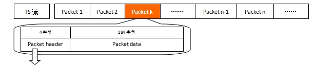

教程目录
PSI/SI教程

如果你是PSI/SI的初学者， 那么就让一切都从这里开始吧...
版权声明：未经许可，请勿转载！
©2016 · OneLib智库 · 挖掘自己的财富
第一章：预备知识
关于PSI/SI你不能不知道的事
最近开始学习数字电视机顶盒的开发，从MPEG-2到DVB，看着看着突然就出现了一大堆表格， 什么PAT、PMT、CAT……如此多的表该怎样深入了解呢？
我们知道，数字电视机顶盒接收到的是一段段的码流，我们称之为TS（Transport Stream，传输流）， 每个TS流都携带一些信息，如Video、Audio以及我们需要学习的PAT、PMT等信息。 因此，我们首先需要了解TS流是什么，以及TS流是怎样形成、有着怎样的结构。
TS流、PS流、PES流和ES流都是什么
Brief Introduction Of TS, PS, PES and ES
ES流（Elementary Stream） 基本码流，不分段的音频、视频或其他信息的连续码流。
PES流 把基本流ES分割成段，并加上相应头文件打包成形的打包基本码流。
PS流（Program Stream） 节目流，将具有共同时间基准的一个或多个PES组合（复合）而成的单一数据流（用于播放或编辑系统，如m2p）。
TS流（Transport Stream） 传输流，将具有共同时间基准或独立时间基准的一个或多个PES组合（复合）而成的单一数据流（用于数据传输）。
*NOTE:
TS流和PS流的区别：TS流的包结构是长度是固定的；PS流的包结构是可变长度的。
这导致了 TS流的抵抗传输误码的能力强于PS流 （TS码流由于采用了固定长度的包结构，
当传输误码破坏了某一TS包的同步信息时，接收机可在固定的位置检测它后面包中的同步信息，从而恢复同步，避免了信息丢失。
而PS包由于长度是变化的，一旦某一 PS包的同步信息丢失，
接收机无法确定下一包的同步位置，就会造成失步，导致严重的信息丢失。
因此，在信道环境较为恶劣，传输误码较高时，一般采用TS码流；而在信道环境较好，传输误码较低时，一般采用PS码流。）
由于TS码流具有较强的抵抗传输误码的能力，因此目前在传输媒体中进行传输的MPEG-2码流基本上都采用了TS码流的包格。
TS流是如何产生的？
How to generate a Transport Stream

从上图可以看出，视频ES和音频ES通过打包器和共同或独立的系统时间基准形成一个个PES， 通过TS复用器复用形成的传输流。 注意这里的TS流是 位流格式（分析Packet的时候会解释），也即是说TS流是可以按位读取的。
TS流的格式是怎样的？
What's the structure of Transport Stream
TS流是基于Packet的位流格式，即由n个包组成；每个包是188个字节（或204个字节，在188个字节后加上了16字节的CRC校验数据，其他格式一样）。 下图是一个TS流，以第k个包(Package)为例：
| Packet Header（包头）信息说明 | |||
| # | 标识 | 位数 | 说明 |
| 0 | sync_byte | 8 bits | 同步字节，固定是0x47 |
| 1 | transport_error_indicator | 1 bits | 错误指示信息（1：该包至少有1bits传输错误） |
| 2 | payload_unit_start_indicator | 1 bits | 负载单元开始标志（packet不满188字节时需填充） |
| 3 | transport_priority | 1 bits | 传输优先级标志（1：优先级高） |
| 4 | PID | 13 bits | Packet ID号码，唯一的号码对应不同的包 |
| 5 | transport_scrambling_control | 2 bits | 加密标志（00：未加密；其他表示已加密） |
| 6 | adaptation_field_control | 2 bits | 附加区域控制 |
| 7 | continuity_counter | 4 bits | 包递增计数器 |
上面表格是一个包(Package)的头(Header)的说明，其中需要注意的是：PID是TS流中唯一识别标志，Packet Data是什么内容就是由PID决定的。 如果一个TS流中的一个Packet的Packet Header中的PID是0x0000，那么这个Packet的Packet Data就是DVB的PAT表而非其他类型数据（如Video、Audio或其他业务信息）。
下表给出了一些表的PID值，这些值是固定的，不允许更改。
| TS流中PID的分配 | ||
| 表 | PID值 | 说明 |
| PAT | 0x0000 | - |
| CAT | 0x0001 | - |
| TSDT | 0x0002 | - |
| 预留 | 0x0003 至0x000F | 无 |
| NIT, ST | 0x0010 | - |
| SDT , BAT, ST | 0x0011 | - |
| EIT, ST | 0x0012 | - |
| RST, ST | 0x0013 | - |
| TDT, TOT, ST | 0x0014 | - |
| 网络同步 | 0x0015 | 无 |
| 预留使用 | 0x0016 至 0x001B | 无 |
| 带内信令 | 0x001C | 无 |
| DIT | 0x001E | 无 |
| SIT | 0x001F | 无 |
下面以一个TS流的其中一个Packet中的Packet Header为例进行说明：
| 位号 | 0 | 1 | 2 | 3 | 4 | 5 | 6 | 7 | 8 | 9 | 10 | 11 | 12 | 13 | 14 | 15 | 16 | 17 | 18 | 19 | 20 | 21 | 22 | 23 | 24 | 25 | 26 | 27 | 28 | 29 | 30 | 31 | ... |
| Packet（二进制） | 0 | 1 | 0 | 0 | 0 | 1 | 1 | 1 | 0 | 0 | 0 | 0 | 0 | 1 | 1 | 1 | 1 | 1 | 1 | 0 | 0 | 1 | 0 | 1 | 0 | 0 | 0 | 1 | 0 | 0 | 1 | 0 | ... |
| Packet（十六进制） | 4 | 7 | 0 | 7 | E | 5 | 1 | 2 | ... | ||||||||||||||||||||||||
| Packet Header信息 | 0: sync_byte=0x47 | 1 | 2 | 3 | 4: PID (这里是0x07e5) | 5 | 6 | 7 | ... | ||||||||||||||||||||||||
拖动可显示更多数据
上表中，第一行为表头的位号（0-31，共32位）， 第二行为每位的二进制数值， 第三行为每个字节的16进制数值， 最后一行对应上面的表格《Packet Header（包头）信息说明》的数据。下表是《Packet Header（包头）信息说明》的Demo数据。
| Packet Header（包头）信息Demo | |||
| # | 标识 | 位数 | 说明 |
| 0 | sync_byte | 8 bits | 固定是0x47 |
| 1 | transport_error_indicator | 1 bits | 值为0，表示当前包没有发生传输错误。错误指示信息（1：该包至少有1bits传输错误） |
| 2 | payload_unit_start_indicator | 1 bits | 值为0，含义参考ISO13818-1标准文档。负载单元开始标志（packet不满188字节时需填充） |
| 3 | transport_priority | 1 bits | 值为0，表示当前包是低优先级。传输优先级标志（1：优先级高） |
| 4 | PID | 13 bits | PID=00111 11100101即0x07e5,是Video PID。Packet ID号码，唯一的号码对应不同的包 |
| 5 | transport_scrambling_control | 2 bits | 值为0x00，表示节目没有加密。加密标志（00：未加密；其他表示已加密） |
| 6 | adaptation_field_control | 2 bits | 值为0x01,具体含义请参考ISO13818-1。附加区域控制 |
| 7 | continuity_counter | 4 bits | 值为0x02,表示当前传送的相同类型的包是第3个。包递增计数器 |
回顾一下，TS流是一种位流（当然就是数字的）， 它是由ES流分割成PES后复用而成的；它经过网络传输被机顶盒接收到； 数字电视机顶盒接收到TS流后将解析TS流。
TS流是由一个个Packet（包）构成的， 每个包都是由Packet Header（包头）和Packet Data（包数据）组成的。 其中Packet Header指示了该Packet是什么属性的，并给出了该Packet Data的数据的唯一网络标识符PID。
PSI/SI缩略语
Abbreviations in PSI/SI
| PSI/SI缩略语（简版） | |||
| 关键字 | 全称 | 中文翻译 | 备注 |
| PSI | Program Specific Information | 节目引导信息 | 对单一码流的描述 |
| SI | Service Information | 业务信息 | 对系统中所有码流的描述 |
| TS | Transport Stream | 传输流 （常称为TS流） | 一个频道（多个节目及业务）的TS包复用后称TS流 |
| TS包 | Transport Packet | 传输包 | 数字视音频、图文数据打包成TS包 |
| PAT | Program Association Table | 节目关联表 | 将节目号码和节目映射表PID相关联，获取数据的开始 |
| PMT | Program Map Table | 节目映射表 | 指定一个或多个节目的PID |
| CAT | Conditional Access Table | 条件接收表 | 将一个或多个专用EMM流分别与唯一的PID相关联 |
| NIT | Network Information Table | 网络信息表 | 描述整个网络，如多少TS流、频点和调制方式等信息 |
| SDT | Service Description Table | 业务描述表 | 包含业务数据（如业务名称、起始时间、持续时间等） |
| BAT | Bouquet Association Table | 业务群关联表 | 给出业务群的名称及其业务列表等信息 |
| EIT | Event Information Table | 事件信息表 | 包含事件或节目相关数据，是生成EPG的主要表 |
| RST | Running Status Table | 运行状态表 | 给出事件的状态（运行/非运行） |
| TDT | Time&Date Table | 时间和日期表 | 给出当前事件和日期相关信息，更新频繁 |
| TOT | Time Offset Table | 时间偏移表 | 给出了当前时间日期与本地时间偏移的信息 |
| ST | Stuffing Table | 填充表 | 用于使现有的段无效，如在一个传输系统的边界 |
| SIT | Selection Information Table | 选择信息表 | 仅用于码流片段中，如记录的一段码流，包含描述该码流片段业务信息段的地方 |
| DIT | Discontinuity Information Table DVB | 间断信息表 | 仅用于码流片段，如记录的一段码流中，它将插入到码流片段业务信息间断的地方 |
注：绿色背景为PSI信息，蓝色背景为SI信息。
详细列表请移步： PSI/SI名词速查
业务与事件
Service and Event
关于业务（Service）、事件（Event），我们要弄清楚其准确意义，避免混淆。
那么什么是“业务”，什么是“事件”呢？ 按照普通人的习惯来说，“业务”就是指“频道”，“事件”就是“节目”。 举个例子：CCTV1是一个频道，其标准说法应该是“业务（Service）”； 《新闻联播》是一个节目，其标准说法应该是“事件”。
在实际中，我们经常将“频道(Channel)”代指“业务(Service)”，比如上面的说明。 但事实上，在正式的场合，尤其翻译回英语后，“Channel”和我们认知中的“频道”是完全不同的概念。 从下图可以看出，“Channel”指的是“频点”或者“信道”，而每个“Channel”里会有一个或多个的“Service”。
因此，务必要养成良好的习惯，在交流中才能准确地描述 业务(Service) 、 事件(Event) 和 频道(Channel) 。

参考文档
References
| # | 文档名称 | 作者 |
| 1 | 《1.从TS流到PAT和PMT》 | 林晓州 |
| 2 | 《PSI/SI深入学习》 | 林晓州 |
| 3 | 《En300468.V1.7.1_Specification for SI in DVB Systems.pdf》 | European Standard |
| 4 | 《数字视频广播中文业务信息规范》 | 国家广播电影电视总局 |
版本信息
Version Information
| # | 发布日期 | 版本 | 更新内容 | 作者 | 审核 |
| 1 | 2013年08月09日 | V1.0 | 文档《1.从TS流到PAT和PMT》 | 林晓州 | —— |
| 2 | 2016年02月18日 | V2.0 | 整合了多个文档资料，对PSI/SI学习所需的知识进行系统的总结。 | 林晓州 | —— |